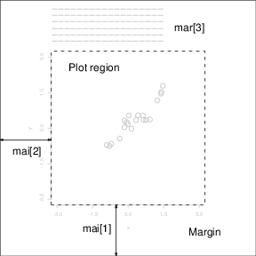
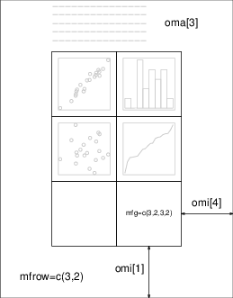

Graphical facilities are an important and extremely versatile component of the R environment. It is possible to use the facilities to display a wide variety of statistical graphs and also to build entirely new types of graph.
The graphics facilities can be used in both interactive and batch modes,
but in most cases, interactive use is more productive. Interactive use
is also easy because at startup time R initiates a graphics
device driver which opens a special graphics window for
the display of interactive graphics. Although this is done
automatically, it may useful to know that the command used is
X11() under UNIX, windows() under Windows and
quartz() under macOS. A new device can always be opened by
dev.new().
Once the device driver is running, R plotting commands can be used to produce a variety of graphical displays and to create entirely new kinds of display.
Plotting commands are divided into three basic groups:
In addition, R maintains a list of graphical parameters which can be manipulated to customize your plots.
This manual only describes what are known as ‘base’ graphics. A separate graphics sub-system in package grid coexists with base – it is more powerful but harder to use. There is a recommended package lattice which builds on grid and provides ways to produce multi-panel plots akin to those in the Trellis system in S.
High-level plotting functions are designed to generate a complete plot of the data passed as arguments to the function. Where appropriate, axes, labels and titles are automatically generated (unless you request otherwise.) High-level plotting commands always start a new plot, erasing the current plot if necessary.
plot() functionOne of the most frequently used plotting functions in R is the
plot() function. This is a generic function: the type of
plot produced is dependent on the type or class of the first
argument.
plot(x, y)plot(xy)If x and y are vectors, plot(x, y)
produces a scatterplot of y against x. The same effect can
be produced by supplying one argument (second form) as either a list
containing two elements x and y or a two-column matrix.
plot(x)If x is a time series, this produces a time-series plot. If x is a numeric vector, it produces a plot of the values in the vector against their index in the vector. If x is a complex vector, it produces a plot of imaginary versus real parts of the vector elements.
plot(f)plot(f, y)f is a factor object, y is a numeric vector. The first form generates a bar plot of f; the second form produces boxplots of y for each level of f.
plot(df)plot(~ expr)plot(y ~ expr)df is a data frame, y is any object, expr is a list
of object names separated by ‘+’ (e.g., a + b + c). The
first two forms produce distributional plots of the variables in a data
frame (first form) or of a number of named objects (second form). The
third form plots y against every object named in expr.
R provides two very useful functions for representing multivariate
data. If X is a numeric matrix or data frame, the command
> pairs(X)
produces a pairwise scatterplot matrix of the variables defined by the
columns of X, that is, every column of X is plotted
against every other column of X and the resulting n(n-1)
plots are arranged in a matrix with plot scales constant over the rows
and columns of the matrix.
When three or four variables are involved a coplot may be more
enlightening. If a and b are numeric vectors and c
is a numeric vector or factor object (all of the same length), then
the command
> coplot(a ~ b | c)
produces a number of scatterplots of a against b for given
values of c. If c is a factor, this simply means that
a is plotted against b for every level of c. When
c is numeric, it is divided into a number of conditioning
intervals and for each interval a is plotted against b
for values of c within the interval. The number and position of
intervals can be controlled with given.values= argument to
coplot()—the function co.intervals() is useful for
selecting intervals. You can also use two given variables with a
command like
> coplot(a ~ b | c + d)
which produces scatterplots of a against b for every joint
conditioning interval of c and d.
The coplot() and pairs() function both take an argument
panel= which can be used to customize the type of plot which
appears in each panel. The default is points() to produce a
scatterplot but by supplying some other low-level graphics function of
two vectors x and y as the value of panel= you can
produce any type of plot you wish. An example panel function useful for
coplots is panel.smooth().
Other high-level graphics functions produce different types of plots. Some examples are:
qqnorm(x) ¶qqline(x)qqplot(x, y)Distribution-comparison plots. The first form plots the numeric vector
x against the expected Normal order scores (a normal scores plot)
and the second adds a straight line to such a plot by drawing a line
through the distribution and data quartiles. The third form plots the
quantiles of x against those of y to compare their
respective distributions.
hist(x) ¶hist(x, nclass=n)hist(x, breaks=b, …)Produces a histogram of the numeric vector x. A sensible number
of classes is usually chosen, but a recommendation can be given with the
nclass= argument. Alternatively, the breakpoints can be
specified exactly with the breaks= argument. If the
probability=TRUE argument is given, the bars represent relative
frequencies divided by bin width instead of counts.
dotchart(x, …) ¶Constructs a dotchart of the data in x. In a dotchart the
y-axis gives a labelling of the data in x and the
x-axis gives its value. For example it allows easy visual
selection of all data entries with values lying in specified ranges.
image(x, y, z, …) ¶contour(x, y, z, …)persp(x, y, z, …)Plots of three variables. The image plot draws a grid of rectangles
using different colours to represent the value of z, the contour
plot draws contour lines to represent the value of z, and the
persp plot draws a 3D surface.
There are a number of arguments which may be passed to high-level graphics functions, as follows:
add=TRUEForces the function to act as a low-level graphics function, superimposing the plot on the current plot (some functions only).
axes=FALSESuppresses generation of axes—useful for adding your own custom axes
with the axis() function. The default, axes=TRUE, means
include axes.
log="x"log="y"log="xy"Causes the x, y or both axes to be logarithmic. This will work for many, but not all, types of plot.
type=The type= argument controls the type of plot produced, as
follows:
type="p"Plot individual points (the default)
type="l"Plot lines
type="b"Plot points connected by lines (both)
type="o"Plot points overlaid by lines
type="h"Plot vertical lines from points to the zero axis (high-density)
type="s"type="S"Step-function plots. In the first form, the top of the vertical defines the point; in the second, the bottom.
type="n"No plotting at all. However axes are still drawn (by default) and the coordinate system is set up according to the data. Ideal for creating plots with subsequent low-level graphics functions.
xlab=stringylab=stringAxis labels for the x and y axes. Use these arguments to change the default labels, usually the names of the objects used in the call to the high-level plotting function.
main=stringFigure title, placed at the top of the plot in a large font.
sub=stringSub-title, placed just below the x-axis in a smaller font.
Sometimes the high-level plotting functions don’t produce exactly the kind of plot you desire. In this case, low-level plotting commands can be used to add extra information (such as points, lines or text) to the current plot.
Some of the more useful low-level plotting functions are:
points(x, y) ¶lines(x, y)Adds points or connected lines to the current plot. plot()’s
type= argument can also be passed to these functions (and
defaults to "p" for points() and "l" for
lines().)
text(x, y, labels, …) ¶Add text to a plot at points given by x, y. Normally
labels is an integer or character vector in which case
labels[i] is plotted at point (x[i], y[i]). The default
is 1:length(x).
Note: This function is often used in the sequence
> plot(x, y, type="n"); text(x, y, names)
The graphics parameter type="n" suppresses the points but sets up
the axes, and the text() function supplies special characters, as
specified by the character vector names for the points.
abline(a, b) ¶abline(h=y)abline(v=x)abline(lm.obj)Adds a line of slope b and intercept a to the current
plot. h=y may be used to specify y-coordinates for
the heights of horizontal lines to go across a plot, and
v=x similarly for the x-coordinates for vertical
lines. Also lm.obj may be list with a coefficients
component of length 2 (such as the result of model-fitting functions,)
which are taken as an intercept and slope, in that order.
polygon(x, y, …) ¶Draws a polygon defined by the ordered vertices in (x, y)
and (optionally) shade it in with hatch lines, or fill it if the
graphics device allows the filling of figures.
legend(x, y, legend, …) ¶Adds a legend to the current plot at the specified position. Plotting
characters, line styles, colors etc., are identified with the labels in
the character vector legend. At least one other argument v
(a vector the same length as legend) with the corresponding
values of the plotting unit must also be given, as follows:
legend( , fill=v)Colors for filled boxes
legend( , col=v)Colors in which points or lines will be drawn
legend( , lty=v)Line styles
legend( , lwd=v)Line widths
legend( , pch=v)Plotting characters (character vector)
title(main, sub) ¶Adds a title main to the top of the current plot in a large font
and (optionally) a sub-title sub at the bottom in a smaller font.
axis(side, …) ¶Adds an axis to the current plot on the side given by the first argument
(1 to 4, counting clockwise from the bottom.) Other arguments control
the positioning of the axis within or beside the plot, and tick
positions and labels. Useful for adding custom axes after calling
plot() with the axes=FALSE argument.
Low-level plotting functions usually require some positioning information (e.g., x and y coordinates) to determine where to place the new plot elements. Coordinates are given in terms of user coordinates which are defined by the previous high-level graphics command and are chosen based on the supplied data.
Where x and y arguments are required, it is also
sufficient to supply a single argument being a list with elements named
x and y. Similarly a matrix with two columns is also
valid input. In this way functions such as locator() (see below)
may be used to specify positions on a plot interactively.
In some cases, it is useful to add mathematical symbols and formulae to a
plot. This can be achieved in R by specifying an expression rather
than a character string in any one of text, mtext, axis,
or title. For example, the following code draws the formula for
the Binomial probability function:
> text(x, y, expression(paste(bgroup("(", atop(n, x), ")"), p^x, q^{n-x})))
More information, including a full listing of the features available can obtained from within R using the commands:
> help(plotmath) > example(plotmath) > demo(plotmath)
It is possible to specify Hershey vector fonts for rendering text when using
the text and contour functions. There are three reasons for
using the Hershey fonts:
More information, including tables of Hershey characters can be obtained from within R using the commands:
> help(Hershey) > demo(Hershey) > help(Japanese) > demo(Japanese)
R also provides functions which allow users to extract or add
information to a plot using a mouse. The simplest of these is the
locator() function:
locator(n, type) ¶Waits for the user to select locations on the current plot using the
left mouse button. This continues until n (default 512) points
have been selected, or another mouse button is pressed. The
type argument allows for plotting at the selected points and has
the same effect as for high-level graphics commands; the default is no
plotting. locator() returns the locations of the points selected
as a list with two components x and y.
locator() is usually called with no arguments. It is
particularly useful for interactively selecting positions for graphic
elements such as legends or labels when it is difficult to calculate in
advance where the graphic should be placed. For example, to place some
informative text near an outlying point, the command
> text(locator(1), "Outlier", adj=0)
may be useful. (locator() will be ignored if the current device,
such as postscript does not support interactive pointing.)
identify(x, y, labels) ¶Allow the user to highlight any of the points defined by x and
y (using the left mouse button) by plotting the corresponding
component of labels nearby (or the index number of the point if
labels is absent). Returns the indices of the selected points
when another button is pressed.
Sometimes we want to identify particular points on a plot, rather
than their positions. For example, we may wish the user to select some
observation of interest from a graphical display and then manipulate
that observation in some way. Given a number of (x, y)
coordinates in two numeric vectors x and y, we could use
the identify() function as follows:
> plot(x, y) > identify(x, y)
The identify() functions performs no plotting itself, but simply
allows the user to move the mouse pointer and click the left mouse
button near a point. If there is a point near the mouse pointer it will
be marked with its index number (that is, its position in the
x/y vectors) plotted nearby. Alternatively, you could use
some informative string (such as a case name) as a highlight by using
the labels argument to identify(), or disable marking
altogether with the plot = FALSE argument. When the process is
terminated (see above), identify() returns the indices of the
selected points; you can use these indices to extract the selected
points from the original vectors x and y.
When creating graphics, particularly for presentation or publication
purposes, R’s defaults do not always produce exactly that which is
required. You can, however, customize almost every aspect of the
display using graphics parameters. R maintains a list of a
large number of graphics parameters which control things such as line
style, colors, figure arrangement and text justification among many
others. Every graphics parameter has a name (such as ‘col’,
which controls colors,) and a value (a color number, for example.)
A separate list of graphics parameters is maintained for each active device, and each device has a default set of parameters when initialized. Graphics parameters can be set in two ways: either permanently, affecting all graphics functions which access the current device; or temporarily, affecting only a single graphics function call.
par() functionThe par() function is used to access and modify the list of
graphics parameters for the current graphics device.
par()Without arguments, returns a list of all graphics parameters and their values for the current device.
par(c("col", "lty"))With a character vector argument, returns only the named graphics parameters (again, as a list.)
par(col=4, lty=2)With named arguments (or a single list argument), sets the values of the named graphics parameters, and returns the original values of the parameters as a list.
Setting graphics parameters with the par() function changes the
value of the parameters permanently, in the sense that all future
calls to graphics functions (on the current device) will be affected by
the new value. You can think of setting graphics parameters in this way
as setting “default” values for the parameters, which will be used by
all graphics functions unless an alternative value is given.
Note that calls to par() always affect the global values
of graphics parameters, even when par() is called from within a
function. This is often undesirable behavior—usually we want to set
some graphics parameters, do some plotting, and then restore the
original values so as not to affect the user’s R session. You can
restore the initial values by saving the result of par() when
making changes, and restoring the initial values when plotting is
complete.
> oldpar <- par(col=4, lty=2)
… plotting commands …
> par(oldpar)
To save and restore all settable24 graphical parameters use
> oldpar <- par(no.readonly=TRUE)
… plotting commands …
> par(oldpar)
Graphics parameters may also be passed to (almost) any graphics function
as named arguments. This has the same effect as passing the arguments
to the par() function, except that the changes only last for the
duration of the function call. For example:
> plot(x, y, pch="+")
produces a scatterplot using a plus sign as the plotting character, without changing the default plotting character for future plots.
Unfortunately, this is not implemented entirely consistently and it is
sometimes necessary to set and reset graphics parameters using
par().
The following sections detail many of the commonly-used graphical
parameters. The R help documentation for the par() function
provides a more concise summary; this is provided as a somewhat more
detailed alternative.
Graphics parameters will be presented in the following form:
name=valueA description of the parameter’s effect. name is the name of the
parameter, that is, the argument name to use in calls to par() or
a graphics function. value is a typical value you might use when
setting the parameter.
Note that axes is not a graphics parameter but an
argument to a few plot methods: see xaxt and yaxt.
R plots are made up of points, lines, text and polygons (filled regions.) Graphical parameters exist which control how these graphical elements are drawn, as follows:
pch="+"Character to be used for plotting points. The default varies with
graphics drivers, but it is usually
a circle.
Plotted points tend to appear slightly above or below the appropriate
position unless you use "." as the plotting character, which
produces centered points.
pch=4When pch is given as an integer between 0 and 25 inclusive, a
specialized plotting symbol is produced. To see what the symbols are,
use the command
> legend(locator(1), as.character(0:25), pch = 0:25)
Those from 21 to 25 may appear to duplicate earlier symbols, but can be
coloured in different ways: see the help on points and its
examples.
In addition, pch can be a character or a number in the range
32:255 representing a character in the current font.
lty=2Line types. Alternative line styles are not supported on all graphics devices (and vary on those that do) but line type 1 is always a solid line, line type 0 is always invisible, and line types 2 and onwards are dotted or dashed lines, or some combination of both.
lwd=2Line widths. Desired width of lines, in multiples of the “standard”
line width. Affects axis lines as well as lines drawn with
lines(), etc. Not all devices support this, and some have
restrictions on the widths that can be used.
col=2Colors to be used for points, lines, text, filled regions and images.
A number from the current palette (see ?palette) or a named colour.
col.axiscol.labcol.maincol.subThe color to be used for axis annotation, x and y labels, main and sub-titles, respectively.
font=2An integer which specifies which font to use for text. If possible,
device drivers arrange so that 1 corresponds to plain text,
2 to bold face, 3 to italic, 4 to bold italic
and 5 to a symbol font (which include Greek letters).
font.axisfont.labfont.mainfont.subThe font to be used for axis annotation, x and y labels, main and sub-titles, respectively.
adj=-0.1Justification of text relative to the plotting position. 0 means
left justify, 1 means right justify and 0.5 means to
center horizontally about the plotting position. The actual value is
the proportion of text that appears to the left of the plotting
position, so a value of -0.1 leaves a gap of 10% of the text width
between the text and the plotting position.
cex=1.5Character expansion. The value is the desired size of text characters (including plotting characters) relative to the default text size.
cex.axiscex.labcex.maincex.subThe character expansion to be used for axis annotation, x and y labels, main and sub-titles, respectively.
Many of R’s high-level plots have axes, and you can construct axes
yourself with the low-level axis() graphics function. Axes have
three main components: the axis line (line style controlled by the
lty graphics parameter), the tick marks (which mark off unit
divisions along the axis line) and the tick labels (which mark the
units.) These components can be customized with the following graphics
parameters.
lab=c(5, 7, 12)The first two numbers are the desired number of tick intervals on the x and y axes respectively. The third number is the desired length of axis labels, in characters (including the decimal point.) Choosing a too-small value for this parameter may result in all tick labels being rounded to the same number!
las=1Orientation of axis labels. 0 means always parallel to axis,
1 means always horizontal, and 2 means always
perpendicular to the axis.
mgp=c(3, 1, 0)Positions of axis components. The first component is the distance from the axis label to the axis position, in text lines. The second component is the distance to the tick labels, and the final component is the distance from the axis position to the axis line (usually zero). Positive numbers measure outside the plot region, negative numbers inside.
tck=0.01Length of tick marks, as a fraction of the size of the plotting region.
When tck is small (less than 0.5) the tick marks on the x
and y axes are forced to be the same size. A value of 1 gives
grid lines. Negative values give tick marks outside the plotting
region. Use tck=0.01 and mgp=c(1,-1.5,0) for internal
tick marks.
xaxs="r"yaxs="i"Axis styles for the x and y axes, respectively. With
styles "i" (internal) and "r" (the default) tick marks
always fall within the range of the data, however style "r"
leaves a small amount of space at the edges.
A single plot in R is known as a figure and comprises a
plot region surrounded by margins (possibly containing axis
labels, titles, etc.) and (usually) bounded by the axes themselves.
A typical figure is
Graphics parameters controlling figure layout include:
mai=c(1, 0.5, 0.5, 0)Widths of the bottom, left, top and right margins, respectively, measured in inches.
mar=c(4, 2, 2, 1)Similar to mai, except the measurement unit is text lines.
mar and mai are equivalent in the sense that setting one
changes the value of the other. The default values chosen for this
parameter are often too large; the right-hand margin is rarely needed,
and neither is the top margin if no title is being used. The bottom and
left margins must be large enough to accommodate the axis and tick
labels. Furthermore, the default is chosen without regard to the size
of the device surface: for example, using the postscript() driver
with the height=4 argument will result in a plot which is about
50% margin unless mar or mai are set explicitly. When
multiple figures are in use (see below) the margins are reduced, however
this may not be enough when many figures share the same page.
R allows you to create an n by m array of figures on a single page. Each figure has its own margins, and the array of figures is optionally surrounded by an outer margin, as shown in the following figure.
The graphical parameters relating to multiple figures are as follows:
mfcol=c(3, 2)mfrow=c(2, 4)Set the size of a multiple figure array. The first value is the number of
rows; the second is the number of columns. The only difference between
these two parameters is that setting mfcol causes figures to be
filled by column; mfrow fills by rows.
The layout in the Figure could have been created by setting
mfrow=c(3,2); the figure shows the page after four plots have
been drawn.
Setting either of these can reduce the base size of symbols and text
(controlled by par("cex") and the pointsize of the device). In a
layout with exactly two rows and columns the base size is reduced by a
factor of 0.83: if there are three or more of either rows or columns,
the reduction factor is 0.66.
mfg=c(2, 2, 3, 2)Position of the current figure in a multiple figure environment. The first two numbers are the row and column of the current figure; the last two are the number of rows and columns in the multiple figure array. Set this parameter to jump between figures in the array. You can even use different values for the last two numbers than the true values for unequally-sized figures on the same page.
fig=c(4, 9, 1, 4)/10Position of the current figure on the page. Values are the positions of
the left, right, bottom and top edges respectively, as a percentage of
the page measured from the bottom left corner. The example value would
be for a figure in the bottom right of the page. Set this parameter for
arbitrary positioning of figures within a page. If you want to add a
figure to a current page, use new=TRUE as well (unlike S).
oma=c(2, 0, 3, 0)omi=c(0, 0, 0.8, 0)Size of outer margins. Like mar and mai, the first
measures in text lines and the second in inches, starting with the
bottom margin and working clockwise.
Outer margins are particularly useful for page-wise titles, etc. Text
can be added to the outer margins with the mtext() function with
argument outer=TRUE. There are no outer margins by default,
however, so you must create them explicitly using oma or
omi.
More complicated arrangements of multiple figures can be produced by the
split.screen() and layout() functions, as well as by the
grid and lattice packages.
R can generate graphics (of varying levels of quality) on almost any type of display or printing device. Before this can begin, however, R needs to be informed what type of device it is dealing with. This is done by starting a device driver. The purpose of a device driver is to convert graphical instructions from R (“draw a line,” for example) into a form that the particular device can understand.
Device drivers are started by calling a device driver function. There
is one such function for every device driver: type help(Devices)
for a list of them all. For example, issuing the command
> postscript()
causes all future graphics output to be sent to the printer in PostScript format. Some commonly-used device drivers are:
X11() ¶For use with the X11 window system on Unix-alikes
windows() ¶For use on Windows
quartz() ¶For use on macOS
postscript() ¶For printing on PostScript printers, or creating PostScript graphics files.
pdf() ¶Produces a PDF file, which can also be included into PDF files.
png() ¶Produces a bitmap PNG file. (Not always available: see its help page.)
jpeg() ¶Produces a bitmap JPEG file, best used for image plots.
(Not always available: see its help page.)
When you have finished with a device, be sure to terminate the device driver by issuing the command
> dev.off()
This ensures that the device finishes cleanly; for example in the case of hardcopy devices this ensures that every page is completed and has been sent to the printer. (This will happen automatically at the normal end of a session.)
By passing the file argument to the postscript() device
driver function, you may store the graphics in PostScript format in a
file of your choice. The plot will be in landscape orientation unless
the horizontal=FALSE argument is given, and you can control the
size of the graphic with the width and height arguments
(the plot will be scaled as appropriate to fit these dimensions.) For
example, the command
> postscript("file.ps", horizontal=FALSE, height=5, pointsize=10)
will produce a file containing PostScript code for a figure five inches high, perhaps for inclusion in a document. It is important to note that if the file named in the command already exists, it will be overwritten. This is the case even if the file was only created earlier in the same R session.
Many usages of PostScript output will be to incorporate the figure in
another document. This works best when encapsulated PostScript
is produced: R always produces conformant output, but only marks the
output as such when the onefile=FALSE argument is supplied. This
unusual notation stems from S-compatibility: it really means that
the output will be a single page (which is part of the EPSF
specification). Thus to produce a plot for inclusion use something like
> postscript("plot1.eps", horizontal=FALSE, onefile=FALSE,
height=8, width=6, pointsize=10)
In advanced use of R it is often useful to have several graphics devices in use at the same time. Of course only one graphics device can accept graphics commands at any one time, and this is known as the current device. When multiple devices are open, they form a numbered sequence with names giving the kind of device at any position.
The main commands used for operating with multiple devices, and their meanings are as follows:
X11()[UNIX]
windows()win.printer()win.metafile()[Windows]
quartz()[macOS]
postscript()pdf()png()jpeg()tiff()bitmap()…Each new call to a device driver function opens a new graphics device, thus extending by one the device list. This device becomes the current device, to which graphics output will be sent.
dev.list() ¶Returns the number and name of all active devices. The device at position 1 on the list is always the null device which does not accept graphics commands at all.
dev.next() ¶dev.prev()Returns the number and name of the graphics device next to, or previous to the current device, respectively.
dev.set(which=k) ¶Can be used to change the current graphics device to the one at position k of the device list. Returns the number and label of the device.
dev.off(k) ¶Terminate the graphics device at point k of the device list. For
some devices, such as postscript devices, this will either print
the file immediately or correctly complete the file for later printing,
depending on how the device was initiated.
dev.copy(device, …, which=k)dev.print(device, …, which=k)Make a copy of the device k. Here device is a device
function, such as postscript, with extra arguments, if needed,
specified by ‘…’. dev.print is similar, but the
copied device is immediately closed, so that end actions, such as
printing hardcopies, are immediately performed.
graphics.off()Terminate all graphics devices on the list, except the null device.
R does not have builtin capabilities for dynamic or interactive graphics, e.g. rotating point clouds or to “brushing” (interactively highlighting) points. However, extensive dynamic graphics facilities are available in the system GGobi by Swayne, Cook and Buja available from
and these can be accessed from R via the package rggobi, described at http://ggobi.org/rggobi.html.
Also, package rgl provides ways to interact with 3D plots, for example of surfaces.